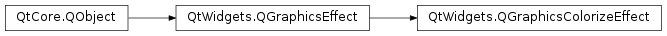

QGraphicsColorizeEffect¶
Note
This class was introduced in Qt 4.6.
Synopsis¶
Slots¶
- def
setColor(c) - def
setStrength(strength)
Signals¶
- def
colorChanged(color) - def
strengthChanged(strength)
Detailed Description¶
The
PySide2.QtWidgets.QGraphicsColorizeEffectclass provides a colorize effect.A colorize effect renders the source with a tint of its
PySide2.QtWidgets.QGraphicsColorizeEffect.color(). The color can be modified using thePySide2.QtWidgets.QGraphicsColorizeEffect.setColor()function.By default, the color is light blue (
PySide2.QtGui.QColor(0, 0, 192)).
-
class
PySide2.QtWidgets.QGraphicsColorizeEffect([parent=nullptr])¶ Parameters: parent – PySide2.QtCore.QObjectConstructs a new
PySide2.QtWidgets.QGraphicsColorizeEffectinstance. Theparentparameter is passed toPySide2.QtWidgets.QGraphicsEffect‘s constructor.
-
PySide2.QtWidgets.QGraphicsColorizeEffect.color()¶ Return type: PySide2.QtGui.QColor
-
PySide2.QtWidgets.QGraphicsColorizeEffect.colorChanged(color)¶ Parameters: color – PySide2.QtGui.QColor
-
PySide2.QtWidgets.QGraphicsColorizeEffect.setColor(c)¶ Parameters: c – PySide2.QtGui.QColor
-
PySide2.QtWidgets.QGraphicsColorizeEffect.setStrength(strength)¶ Parameters: strength – PySide2.QtCore.qreal
-
PySide2.QtWidgets.QGraphicsColorizeEffect.strength()¶ Return type: PySide2.QtCore.qreal
-
PySide2.QtWidgets.QGraphicsColorizeEffect.strengthChanged(strength)¶ Parameters: strength – PySide2.QtCore.qreal
© 2018 The Qt Company Ltd. Documentation contributions included herein are the copyrights of their respective owners. The documentation provided herein is licensed under the terms of the GNU Free Documentation License version 1.3 as published by the Free Software Foundation. Qt and respective logos are trademarks of The Qt Company Ltd. in Finland and/or other countries worldwide. All other trademarks are property of their respective owners.